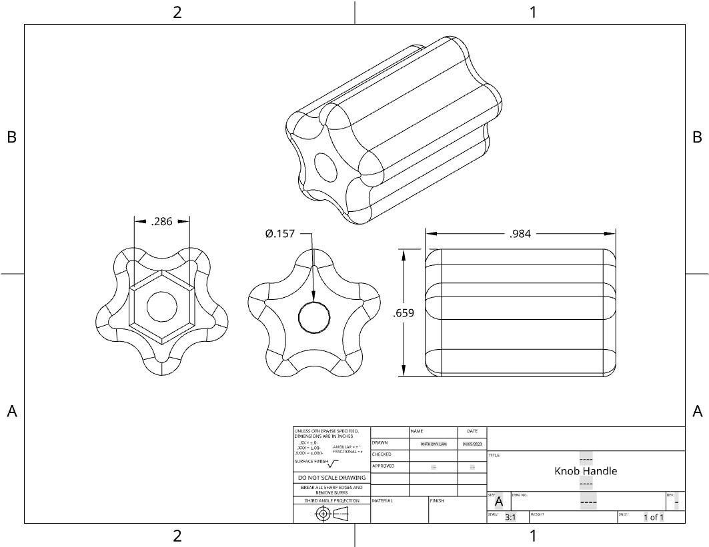
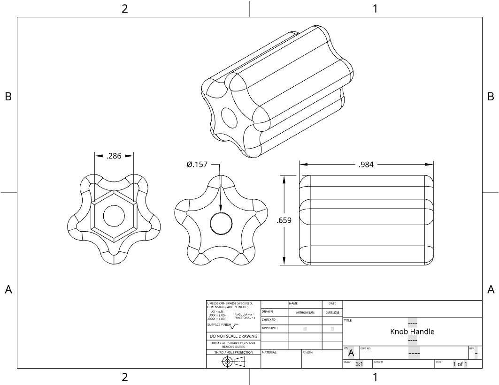
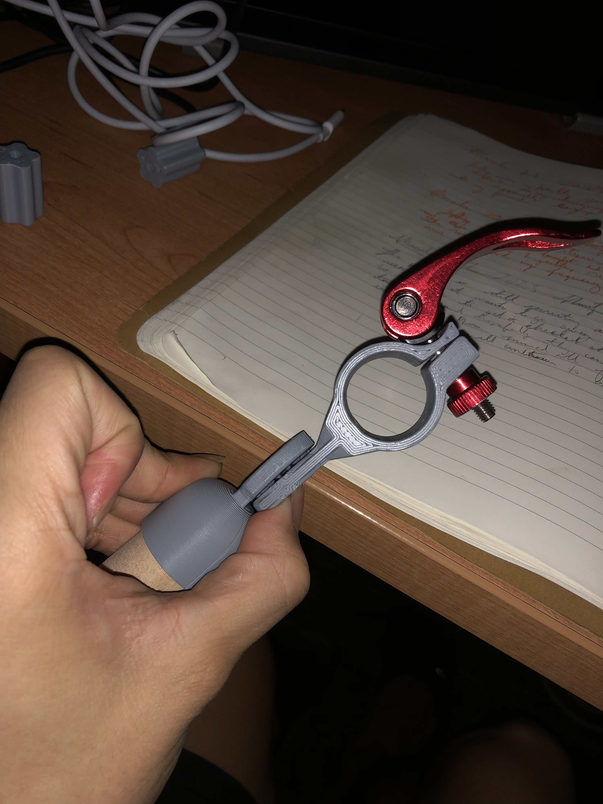
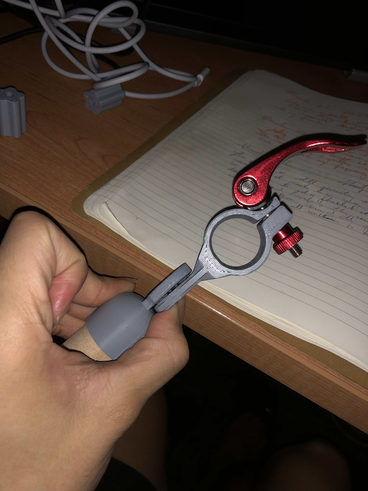

The overall design of the aid is two simple L shaped poles. Each pole gets attached to a walker (the design is not a standalone product) using a clip/hinge 3d printed component. The short side of each L pole has a PVC grip handle that is positioned ideally away from the clip and over the other side of the L pole, doing this would move the weight from the vulnerable clip/hinge to the other steadier end of the short side of the pole which is resting on the long side of the pole. The long side of the pole rests on the ground and provides most of the support to the user's weight. The long side of the L shaped pole relates to the short side using a simple free moving hinge. To learn more click here to download a copy of the project file.
About me
I am from St. Catharines in the Niagara region, studying
software engineering at Western University. When I am not studying, I most of the time
working out, reading, mediation or learning stuff like arduino.
On my downtime I like to watch netflix and play League of Legends to let out some stress.
I choose engineering because I knew it would be a rewarding and challenging achievement
and I reccently discovered my passion in programming. Although, there is so much I have
learn, I am determine to make it through into my fourth year at Western.
Work Experience
Banana Republic May 2023-Aug 2023
- Greeted and assisted customers as they enter the store. Provided a friendly and helpful shopping experience by answering questions, offering product recommendations, and ensuring customers find what they are looking for.
- I developed a deep understanding of Banana Republic's men's clothing and accessory lines. Stayed up-to-date with the latest fashion trends and product features to assist customers effectively.
Caffe Gatti May 2023-Aug 2023
- I interacted with customers, took orders, and provide recommendations based on customer preferences. I ensured that customers have a positive experience by being friendly, knowledgeable, and attentive to their wants and needs.
- As a baristas, I accommodate the customer requests for variations in coffee strength, milk type, sweetness, and flavorings. I made sure I paid attention to their order and thoroughly followed their instructions.
Bella Terra Winery May 2022-Aug 2022
- I guided customers through wine tastings, explaining the different wines available, their characteristics, and the winemaking process. Also, I find which wine may suit their platte and preferences.
- I bridged new connections from customers to the winery and everything it offers such as the Harvest events, end of season celebration and more.
- I promoted the wine club memberships, the benefits, and assist customers in signing up for the club.
- In charge of using the POS to handle in store transactions to customers.

 


 
